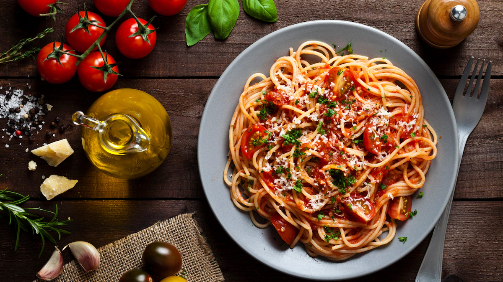

Pizza Margherita
Origine: Napoli 🇮🇹
Ingrediente: roșii San Marzano, mozzarella di bufala, busuioc proaspăt
Gust: simplu, dar iconic — simbolul Italiei în lume

Spaghetti Carbonara
Origine: Roma 🇮🇹
Ingrediente: ouă, pecorino romano, guanciale, piper negru
Gust: cremos, bogat și tradițional fără smântână

Lasagna
Origine: Emilia-Romagna 🇮🇹
Ingrediente: foi de paste, carne tocată, sos bechamel, parmezan
Gust: stratificat, consistent și foarte sățios